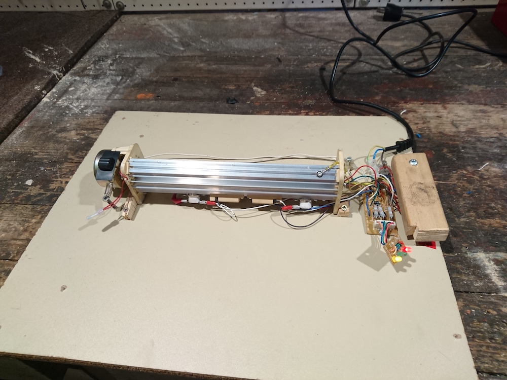
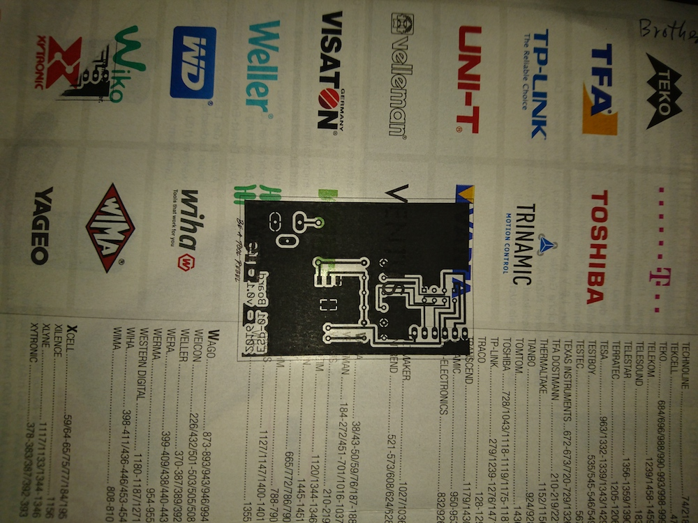

tgauweiler / Toner transfer method for PCBs
Introduction
So for my esp project i wanted to create my own PCB.
Because ordering only one PCB is pretty expensive i decided to make my own with the toner transfer method described here.
I dismantled my cheap Genie Laminator (TODO ADD PICTURES!) and found out that it uses two temperature resistors to control the heating of the rollers.
A quick search on ebay turned up two replacements parts for 180°C and 200°C.
Turns out 180°C is already enough to get a nice transfer of the toner to the PCB.


Conclusion
The resulting machine is neither pretty nor in any way safe (electrical and fire hazard), but it gets the job done. It was easier than i expected to turn up the heat. A safer and nicer case would be nice, but some people already pointed out the life time is probably not so long, because the rollers can’t handle the extra heat and the extra mechanical stress of thicker PCBs for long.